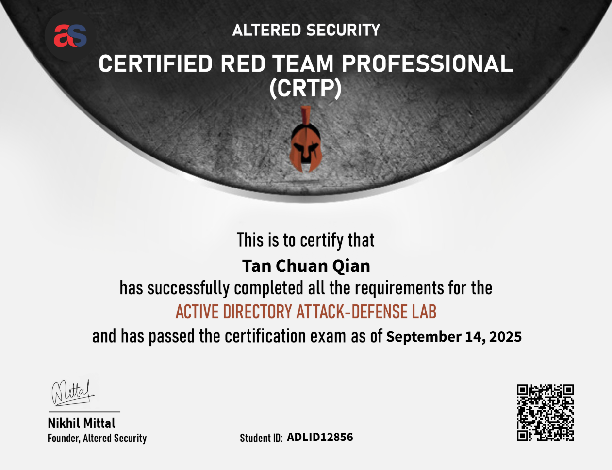

CRTP Review
TLDR; The CRTP offers great course materials and focuses on attacking Active Directory environments through the powershell terminal.

Intro
After completing my OSCP, I still felt that my exposure to Active Directory was quite shallow. So I opted to go for the CRTP certification - a beginner level certification to Active Directory designed by Nikhil Mittal.
Purchasing Options
The purchase of the course can be made here. For the knowledge the course offers, it's quite affordable.
Like others mentioned in their reviews, if you have some knowledge on Active directory, the 30-day option would be sufficient. Personally, I went with the 60-day option as I did it during my internship so I was afraid I wouldn't have enough time to go through the labs in time.
Course Content
The course content came in the form of PDF documents and videos. The documents provided were thorough, introducing attack techniques and the purpose of each attack.
While the PDF were sufficient to tackle the exam, the course videos had additional information shared by Nikhil himself, which explains some concepts more in depth. There were also walkthrough videos for the labs which I found really useful when I didn't understand the execution in the text.
They also offer the usage of a C2 server - Sliver. It allows you to be flexible in the way you carry out your operations.
The materials are also accessible for a lifetime, which is a great plus point!
The Exam
The exam format is quite similar to OSCP's - a 24 hour technical component followed by 24 hours of report writing.
To pass, you will need to successfully compromise all 5 machines in the environment (excluding your foothold machine), and provide supporting evidence in the report.
The purpose of the report is to make sure that the examiner is able to replicate your steps and achieve the same outcome. You will also have to explain why you chose to carry out a certain attack and why your command works so that they know you're not just blindly running commands and praying they work.
I was able to complete the objectives within the time frame while taking sufficient breaks in between. 3 days after I submitted my report, I received an email that I've passed!
Tips
- Once again - DO NOT end your exam without checking that you have all your screenshots
- Keep on practicing on the labs until you are comfortable with the techniques taught
- Stay calm - if you are stuck, you probably didn't enumerate enough